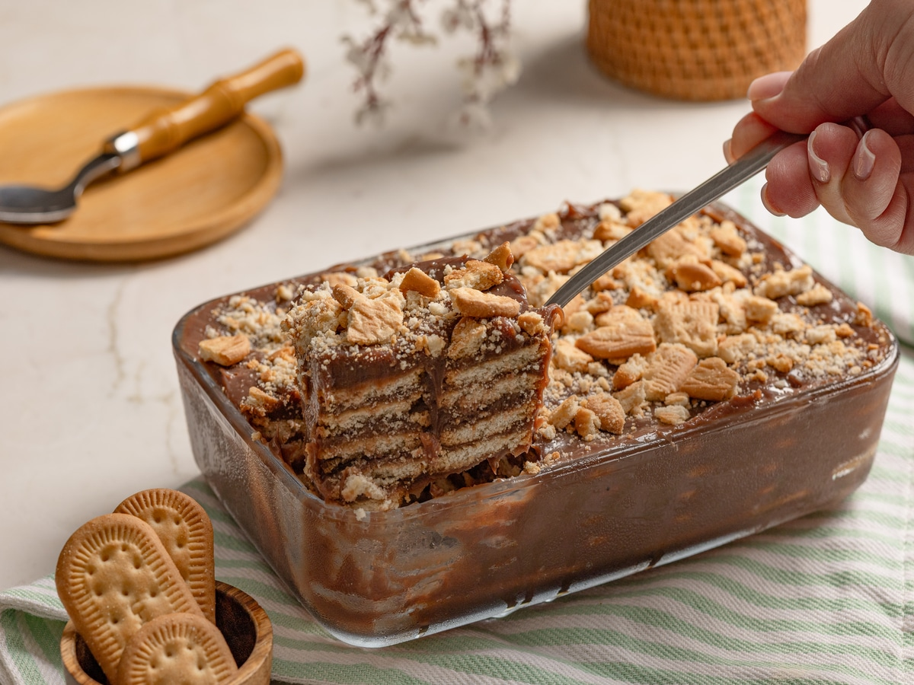

Pavê de chocolate

 40m
40m
INGREDIENTES
- 1 pacote de bolacha maisena
- 1 colher (sobremesa) de chocolate em pó
- 1/2 copo de leite
Creme branco
- 1 lata de leite condensado
- 1 colher (sobremesa) de amido de milho
- 1 lata de leite de vaca (use a medida da lata de leite condensado)
- 2 gemas
Creme de chocolate
- 1 lata de leite condensado
- 1 colher (sobremesa) de amido de milho
- 4 colheres de chocolate em pó
- 1 lata de leite de vaca (a medida da lata de leite condensado)
- 2 gemas
Cobertura
- 4 claras
- 1 lata de creme de leite
- 4 colheres de açúcar
MODO DE PREPARO
- Em uma tigela, misture o leite e o chocolate em pó até que esteja completamente dissolvido.
- Molhe as bolachas no leite e reserve.
- Creme branco: Em uma panela, leve todos os ingredientes ao fogo médio e misture até obter uma consistência grossa e cremosa.
- Creme de chocolate: Repita o processo feito no creme branco.
- Cobertura: Bata as claras em neve com o açúcar até obter um creme consistente, adicione o creme de leite e misture delicadamente.
- Montagem: Em um refratário grande, despeje o creme branco, metade das bolachas, creme de chocolate, bolachas e claras em neve.
- Repita o processo até preencher todo o refratário e leve à geladeira por 40 minutos.
- Bom apetite!